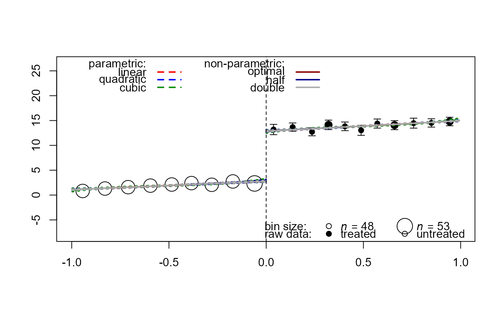

plot.rd.Rdplot.rd plots the relationship between the running variable and the outcome.
It is based on the plot.RD function in the "rdd" package.
# S3 method for rd
plot(
x,
preds = NULL,
fit_line = c("linear", "quadratic", "cubic", "optimal", "half", "double"),
fit_ci = c("area", "dot", "hide"),
fit_ci_level = 0.95,
bin_n = 20,
bin_level = 0.95,
bin_size = c("shade", "size"),
quant_bin = TRUE,
xlim = NULL,
ylim = NULL,
include_rugs = FALSE,
...
)An rd object, typically the result of rd_est.
An optional vector of predictions generated by predict.rd.
A string specifying models to be shown as fitted lines. Options are c("linear", "quadratic", "cubic", "optimal", "half", "double").
A string specifying whether and how to plot prediction confidence intervals
around the fitted lines. Options are c("area", "dot", "hide").
A numeric value between 0 and 1 specifying the confidence level of prediction CIs. The default is 0.95.
An integer specifying the number of bins for binned data points. If bin_n is 0, raw data points are plotted.
If bin_n is < 0, data points are suppressed. The default is 20.
A numeric value between 0 and 1 specifying the confidence level for CIs around binned data points. The default is 0.95.
A string specifying how to plot the number of observations in each bin, by "size" or "shape".
A logical value indicating whether the data are binned per quantiles. The default is TRUE.
An optional numeric vector containing the x-axis limits.
An optional numeric vector containing the y-axis limits.
A logical value indicating whether to include the 1d plot for both axes. The default is FALSE.
Additional arguments affecting the plots produced.
Drew Dimmery (2016). rdd: Regression Discontinuity Estimation. R package version 0.57. https://CRAN.R-project.org/package=rdd
set.seed(12345)
dat <- data.frame(x = runif(1000, -1, 1), cov = rnorm(1000))
dat$tr <- as.integer(dat$x >= 0)
dat$y <- 3 + 2 * dat$x + 3 * dat$cov + 10 * (dat$x >= 0) + rnorm(1000)
rd <- rd_est(y ~ x + tr | cov, data = dat, cutpoint = 0, t.design = "geq")
plot(rd)
